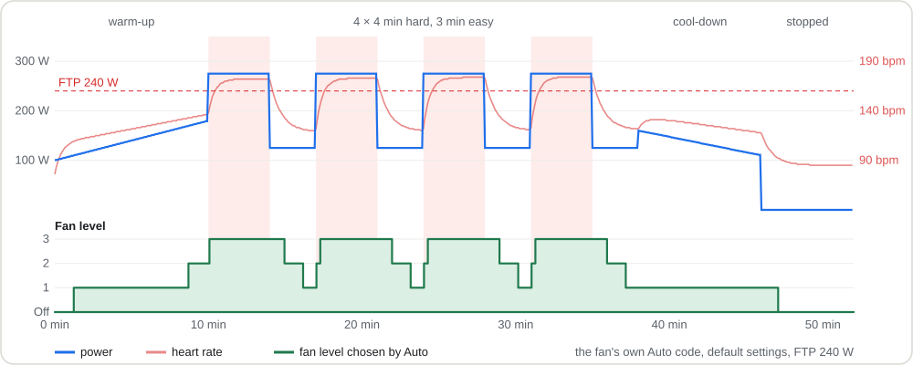
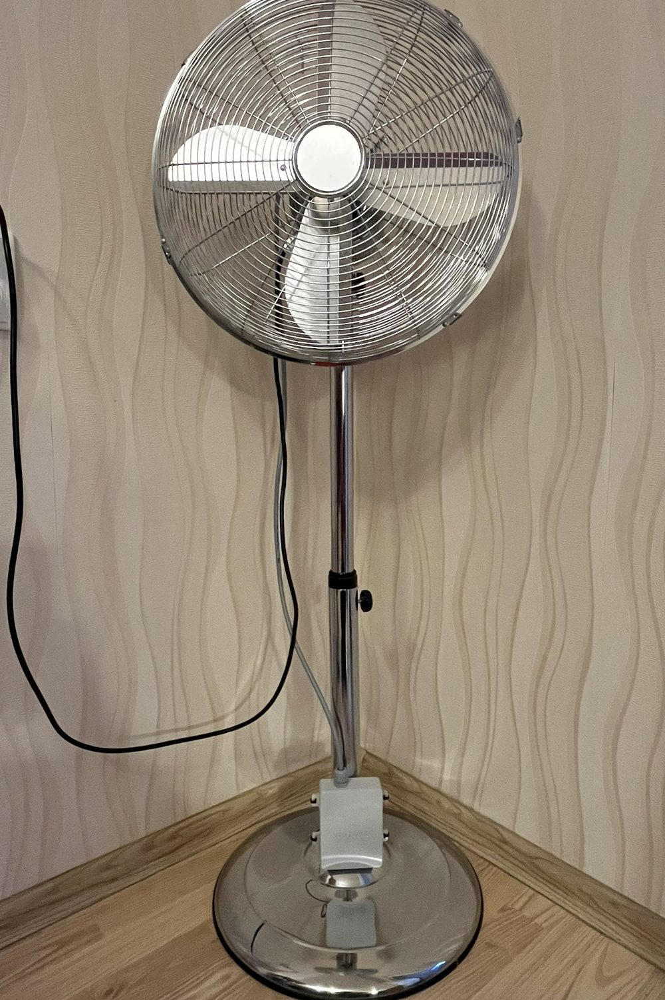
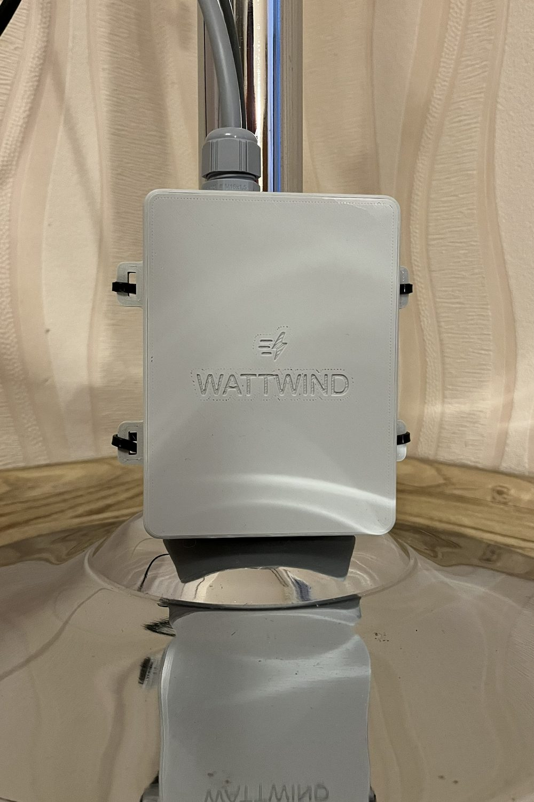
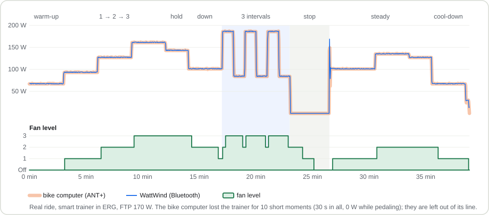
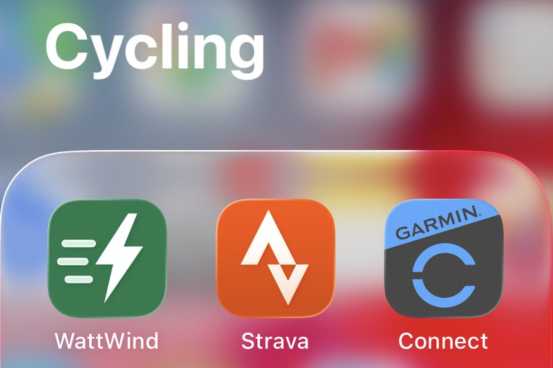
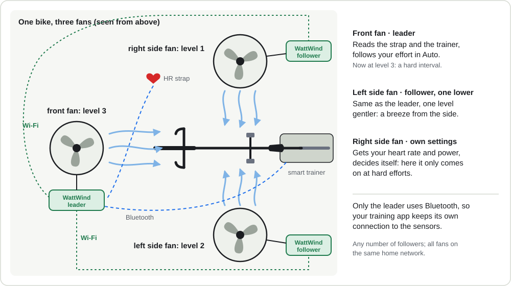

For indoor cyclists · works with your own fan · open hardware
A fan that knows how hard you're riding
Easy spin: a gentle breeze. Threshold intervals: full blast. Stop pedaling: the fan winds
down by itself. It listens to the heart-rate strap and smart trainer you already ride with and runs your own
3-speed floor fan, so you just plug it in and ride: the fan stays off until you warm up.
Your sensors, a small box, and the fan you already have: the box takes over from the fan's speed switch (see Connecting the fan). The phone page is optional: it starts in Auto by itself.
You build it yourself: a small board, a printed box, and a cable in place of the fan's speed
switch (what it takes). It switches mains and is a prototype, not a certified product: read
Safety before building.
Autofollows your power and heart rate
Your fanmost 3-speed floor and pedestal fans
Bluetoothyour strap and trainer, alongside your training app
Phonea web page, no app, no cloud
How it works
A fan in an indoor-training setup usually sits on one speed for the whole ride: too much in the warm-up,
not enough in the hard intervals, and still roaring during the cool-down. Getting off the bike to change it
breaks the workout, so most riders don't. WattWind changes the speed for you, from what your body is doing.

A 52-minute interval workout run through the fan's own Auto code (default settings, FTP 240 W).
The fan comes on in the warm-up, goes to full in every interval, steps down to 2 and then 1 in the
3-minute recoveries, and turns off a minute after you stop.
Power, heart rate, or both. It works from your smart trainer or power meter (watts), from your
heart-rate strap (bpm), or from both:
Power only (no strap): the fan follows your watts.
Heart rate only (rollers, a basic trainer): the fan follows your bpm.
Both: it follows whichever says you are working harder, so on a hot day at moderate power a
rising heart rate still brings more air. Or choose one of them per rider, even with both connected.
Your sensors and your app together. It reads the sensors over Bluetooth, and your training app
(Zwift, TrainerRoad, …) keeps its own connection (most sensors allow two).
It doesn't flap. Power is smoothed, so a short recovery or a coast down a virtual hill doesn't switch
it down, and it changes one step at a time.
It remembers your sensors, so it doesn't grab the strap of the rider next to you, and reconnects
by itself.
Your phone is the remote: watch the numbers or take over from the handlebars.


On a real fan: one small box on the stand, one cable to the fan.
Why not buy a smart fan?
Commercial smart fans exist, and they are a good, simple choice if you want one ready-made fan. WattWind is for a different rider:
Your own fan, or several. Any ordinary 3-speed floor fan, as big as you like, repairable with
standard parts. With linked fans put one in front and one at the side, each at its own level.
Your training numbers decide: your power against your FTP, your heart rate within your own range,
or both, and you choose the step levels yourself, per rider.
Several riders: up to five, each with their own FTP, heart-rate range, step levels and strap; the fan
switches to whoever's strap is being worn.
Also an ordinary fan: manual levels and an off timer for when you're not riding.
Open and yours: no app, no account, no cloud; every setting on a web page; the firmware, board and
box are open, so you can change any of it.
Low cost: a handful of standard parts and a printed box, if you have a soldering iron and a 3D
printer.
The price is your time and care: it's a DIY build that opens a mains appliance (see Is it for
you?).
Is it for you?
You need
A 3-speed floor or pedestal fan with an ordinary speed switch (most cheap ones; check yours).
A smart trainer or power meter, a heart-rate strap, or both, that talk Bluetooth.
230 V mains (Europe and similar; 120 V is untested, see below).
A 2.4 GHz home Wi-Fi for the phone page (optional: the fan works without it).
A PCB ordered online: upload one ZIP file, keep the default options.
16 through-hole parts to solder, no tiny surface-mount parts.
A small printed box, ideally in flame-retardant filament (or your own box).
The fan's speed switch replaced by a cable to the box. That's mains wiring: if it's new to you,
ask someone qualified to do or check that part.
Files copied to the Pico with a free program, step by step in the
build guide.
Not a maker yourself? For someone who solders and has done mains wiring, it's a
straightforward build: show them the build guide. Every step, part and file is in it.
Sensors
Power: a smart trainer or power meter that sends power over Bluetooth (the Cycling Power
service, or FTMS, which most smart trainers use).
Heart rate: any Bluetooth heart-rate strap or armband (Garmin, Polar, Wahoo, …). Most straps send
both ANT+ and Bluetooth; sensors with ANT+ only don't work.
Either one is enough. Power alone, heart rate alone (rollers, a basic trainer) or both; with both,
the fan follows whichever says you're working harder.
Your training app can stay connected (Zwift, TrainerRoad, …) if the sensor accepts two Bluetooth
connections at once; most current straps and trainers do. If one doesn't, connect the app to it over
ANT+ instead, or tick Share heart rate: the fan passes the strap's heart rate on to one app or bike
computer over Bluetooth (one that connects without pairing; Garmin devices take the strap over ANT+).
Mains
Designed and tested for 230 V, 50 Hz (Europe and similar). 120 V should work but is untested, and it
halves the fan power limits.
120 V details
120 V, 60 Hz (North America) should work, but is untested. The power module takes 85–264 V, and the
relays are the same part sold in the US (UL listed, 6 A 250 V). What changes is the current: the same fan
draws about twice as much at 120 V, and the relay contacts care about current, not watts. So at 120 V
halve the wattage limits: T1A for fans up to about 50 W, T2A up to about 95 W (most floor
fans are 40–60 W). The relay datasheet gives a motor rating only for 230 V, and its UL listing assumes at
most 40 °C around it. Set MainsVolts to 120 in the enclosure script: the rating plate on the box then shows 120 V, 60 Hz and
the matching fan power.
Fans
Most cheap floor and pedestal fans fit: three speeds on a rotary or push-button switch, up to about 100 W
(185 W with the bigger fuse). Not for fans with a remote control or a brushless DC motor.
How to tell if your fan fits
Most cheap floor and pedestal fans use a single-phase motor with a tapped winding: one common wire
and one wire per speed, switched by a rotary or push-button switch. That's exactly what this board
replaces.
Motor type: shaded-pole or PSC (permanent split capacitor), with COM + LOW / MED / HIGH taps.
Remove the fan's own speed switch and wire the taps to J2. If there is a run capacitor, keep it wired exactly as it was.
T1A fuse: fans up to about 100 W.T2A: up to 185 W (at 230 V; at 120 V half that, see Mains). 185 W is the most the relays are rated to switch for a single-phase motor (Finder 34.51: 0.185 kW at 230 V), so it is the board's limit even with a bigger fuse.
Not for brushless DC fans with electronic speed control, or fans with remote-control electronics in the base.
Auto mode
Plug the fan in and start riding: that's all. Auto is how the fan runs by default.
Easy spinning: off, or a gentle breeze. Steady endurance: level 2. Sweet spot and harder:
full blast. The steps are set in % of your FTP and heart-rate range, so they mean the same for a strong
and a beginner rider (the manual shows them in training zones).
Up quickly, down slowly: more air within seconds when you go hard, and no drop between intervals.
Stop pedaling: it holds a minute, then winds down to off. Ride on and it carries on.
Too much or too little today? − and + on the page shift Auto by a level for this ride, and a
maximum level keeps evenings quiet.
Calm, Normal or Quick: one setting for how eagerly it follows you.
The details: timings, sensor loss, and how the numbers work
Starts in Auto at power-up, fan off. With FTP 240, level 1 comes on about 15 s into a
150 W warm-up (or at a heart rate around 119 bpm, with the default rest 60 and max 190).
One step at a time. Up after at least 15 s at the current level, down after at least 60 s.
Not pedaling (cadence 0 or under 20 W for 5 s): hold for 60 s (Normal), then one level down per minute.
Start pedaling again and it carries on from where it is.
Sensor loss: lose power and it runs on HR; lose HR and it runs on power; lose both and it
holds for 2 minutes, then steps down.
Nudge: − and + under the buttons give one level less or more than Auto chooses, for this ride (up to
two levels): Auto still follows the workout, just with a bit less or more air. A + never switches the fan on
while you aren't pedaling; cleared when the ride ends.
Highest level: a setting caps Auto (and the nudge) at level 1 or 2, for quiet evenings; levels
picked by hand are not limited.
Idle off: in Auto, no pedaling, or no sensor data at all, for 15 minutes (configurable) turns the
fan off. With a strap only, pedaling can't be seen: Auto follows heart rate down instead.
Once per second the firmware computes a single demand number from power and heart rate:
p_ema = power, EMA: ~12 s when rising, ~75 s when falling
hr_f = heart rate, ~5 s EMA
p_score = p_ema / FTP
hr_score = (hr_f - hr_rest) / (hr_max - hr_rest)
demand = max(p_score, hr_score)
EMA is an exponential moving average: every second the smoothed value moves a fraction of
the way towards the new reading, so a single spike or dropout barely moves it. The time constant is
roughly how long it takes to cover two-thirds of a sudden change. Power uses two of them: jump from
150 W to 300 W and p_ema is near 245 W after 12 s, but drop back to 150 W and it is still
around 250 W half a minute later.
Power reacts fast when you go hard and lets go slowly, so the fan doesn't drop between intervals.
Heart rate catches the "it's hot and I'm cooked" case where power is moderate but your body isn't.
Level
Step up when demand ≥
Step down when demand <
1 (low)
0.45
0.38
2 (medium)
0.70
0.63
3 (high)
0.88
0.81
Fan response is one setting that changes how quickly Auto follows you:
Response
Power rising
Power falling
Hold after stopping
Calm
~20 s
~120 s
90 s
Normal
~12 s
~75 s
60 s
Quick
~6 s
~40 s
30 s
Thresholds, dwell times, timeouts and the response preset are all settings.
Same numbers as your bike computer
A 38-minute test ride on a smart trainer in ERG mode, with a chest strap. A bike computer recorded power, heart
rate and cadence over ANT+, while WattWind read the same trainer and strap over Bluetooth. Compared second by second,
the two recordings match: the fan gets the same numbers as your bike computer, less than a second later.

The fan's power reading (blue) lies on the bike computer's (orange) all the way. Below, the fan level
(green) follows the workout: up step by step, 3 in the hard intervals and 2 in the short rests between them, off
about a minute after you stop pedaling and back when you ride on, level 1 in the cool-down.
What was checked
Result
Power
0.7 W apart on average
Heart rate
0.1 to 0.2 bpm apart
Cadence
0.5 to 0.6 rpm apart
Delay
under 1 second
Fan level
18 changes, each one when Auto's rules say (within 2 s)
Buttons, "heart rate only", strap taken off (a second short ride)
as designed
A linked second fan
at the leader's level in 2176 of 2177 seconds
Off after the ride
15 minutes after the last pedal stroke, as set
Restarts during the rides, with the real fan motor switching
none
Also an ordinary fan
Not riding? It is still your fan, for a hot day at the desk or a night in summer. No sensors needed.
Pressing 1, 2, 3 and Off on the page (right): the fan follows within a second. With sound, so you hear
the speeds change. No sensors connected here, so the values show –.
Manual: Off · 1 · 2 · 3
Press Off, 1, 2 or 3 on the page and the fan stays at that level until you
change it, also after a ride, like any fan. Auto hands it back to your riding.
Off timer
At 1, 2 or 3: Off in 30 min, 1 h or 2 h. Then it turns off and stays off, for falling asleep
with the fan on.
Forgotten? It switches itself off
After 8 hours in Manual it goes back to Auto, so a fan you forgot is off by the next morning. Change the
8 hours in Settings (up to 24), or set 0 to stay in Manual until you change it yourself.
On your phone
The fan's own speed switch is replaced by WattWind, so the buttons are on its web page. Put the page on
your phone's home screen and it opens like an app: on an iPhone in Safari, Share → Add to Home
Screen; on Android in Chrome, menu ⋮ → Add to home screen.

On the home screen, next to the other cycling apps. (The other app icons belong to their owners.)
Linked fans
One fan in front is often not enough on a hot day: a fan from the side, or one from above, cools a lot more.
With linked fans every fan has its own WattWind, and they all follow one ride. You set it up once, and after that
only one page needs touching.

What linked fans are for: one rider, several fans, each blowing at its own level.
Leader and followers
One WattWind, the leader, reads the heart-rate strap and the trainer, the same as a single fan.
It sends the heart rate, power, cadence and its level over your home Wi-Fi once a second.
Any number of followers listen. They don't use Bluetooth at all, so the sensors keep a free
connection for your training app.
What a follower does
Same level: runs at the leader's level, also when you press the leader's buttons or use its off
timer, so the leader's page is one remote for all fans.
One or two lower: the same, but gentler, for a side fan that joins in with harder efforts: one
lower is off while the leader is at 1, two lower runs only when the leader is at 3. One higher for a weaker or
farther fan; when the leader is off, it is off too.
Own settings: takes the leader's heart rate and power and decides with its own Auto settings, for
example a fan that only starts at hard efforts.
Setting it up, and what happens when something goes wrong
Setting it up
Put all fans on the same home network (not a guest network; "client isolation" blocks it).
On the leader: Settings → Linked fans → Pair a new fan. Pairing stays open for 60 seconds.
On the follower, press Follow next to the leader in the same list. It restarts and follows from
then on.
Changing between same level and own settings, or the level offset, applies at once. Only starting and
stopping following restarts the fan.
When something goes wrong
Leader unplugged or Wi-Fi gone: the followers hold their level for a minute, then step down one level a
minute until off.
A follower's own buttons still work. Its Follow button hands it back to the leader.
Messages are signed with a key that pairing hands over, so a fan only follows its own leader, and copied
or faked messages are ignored. They are encrypted too: other devices on your network can't read them.
Done with a follower? Unpair all followers on the leader gives it a new key, so every follower
stops; Pair again on the ones you want back.
Status: big fan level, mode, live power / HR / cadence, demand score, sensor dots.
Control: Auto · Off · 1 · 2 · 3.
Riders (manual): up to 5 profiles (FTP, heart-rate range, power / heart rate / both, fan response, step up / down levels, own strap); the fan switches to
whoever's strap is being worn.
Linked fans (manual): more WattWinds can follow one leader over Wi-Fi (same level, or their own settings
from the leader's heart rate and power); only the leader uses the sensors' Bluetooth.
Settings: FTP, HR max/rest, thresholds, fan response, timeouts, sensor choice, Share heart rate, Wi-Fi,
hostname, a Restart button, and Erase everything before you give the fan away.
Help: a built-in manual at /help, behind the ? next to the title. The same
user manual is on this site, so you can read it before building.
Served by the fan itself: no app, no account, no internet needed.
Plus diagnostics, backups, updates over Wi-Fi and shortcuts
Diagnostics at the bottom of Settings (version, running time, last restart, Wi-Fi signal, sensor
batteries, a firmware file check, a logbook), and a warning on the main screen if something needs you.
For a problem that's hard to catch, a Detailed recording (Settings → Maintenance) keeps every
second of a ride for 24 h, to download and send with your report.
Backup: download the settings as a file and restore them on this or another fan.
Firmware update: pick the new release file on the page; the fan checks its signature (only official
releases are accepted) and every file, then restarts with the new version. No USB cable, the box stays closed.
Check for updates asks GitHub from your phone, when you press it, whether there is a new version.
Shortcuts and home automation: "Fan high" on your phone's home screen, a voice assistant, or the fan
in Home Assistant; the manual has the phone shortcuts, the
build guide the Home Assistant setup.
Wi-Fi that always works
Joins your home network and answers at http://wattwind.local; the IP is shown on the page for Android.
No network saved or not reachable within 20 s: it opens its own WPA2 access point WattWind-XXXX at 192.168.4.1.
2.4 GHz Wi-Fi with WPA2 (5 GHz-only and WPA3-only networks don't work). Find networks lists what
the fan can see, strongest first, so you pick your network instead of typing it (and only usable 2.4 GHz
networks show up).
Fan control never depends on Wi-Fi.
Setup and dropouts
Setup shows the address first: from the access point, "Test Wi-Fi" joins your network while
the access point stays up and shows the IP your router gave it, before the fan switches over.
A wrong password is reported at once and nothing is saved.
Router gone for 2 minutes (or slower to start than the fan after a power cut): its own access point,
so the page stays reachable; it tries the home network again after 2 minutes, then every 5, and switches back by itself.
Captive portal on its own network: join WattWind-XXXX and the page opens by itself, like a
hotel Wi-Fi sign-in, so nobody has to type 192.168.4.1.
Security and privacy
A box on your home network that switches mains and knows your heart rate should be careful with both. The design
was compared point by point with ETSI EN 303 645, the security baseline for consumer smart devices behind the EU
and UK rules, as a guide, not a certification. It's a hobby project, made with care, but no promises: no support period, no
guaranteed updates.
Your own password and PIN from the start. The first time you open the page it asks for a password for
the fan's own Wi-Fi and a settings PIN, so no fan keeps the published default. The PIN protects the settings,
Wi-Fi, firmware updates and the logbook (and the fan buttons too, if you like); each phone or computer asks once
and remembers it. Wrong guesses are slowed down. (Settings)
Only official firmware. Updates from the page must carry the release's digital signature; a modified
or foreign file is refused and nothing changes. (Updating the firmware)
Your data stays home. No cloud, no account, no app. Settings and the logbook stay on the fan, and the
logbook keeps no heart-rate or power values (only a detailed recording you start yourself does, for 24 h, to
find a problem; deleted 7 days later). The only thing the fan asks the internet is the time.
(Your data)
More: linked fans, Bluetooth, browsers, a forgotten PIN, giving it away, limits
Linked fans talk encrypted. Heart rate and power between your fans are encrypted and signed with a
key only paired fans have: other devices on your network can't read or fake them.
Heart rate over Bluetooth only if you ask. Share heart rate is off until you tick it; while it's on,
the fan sends your heart rate like a strap does, to one app or watch nearby.
Websites can't reach it through your browser. The fan answers only requests addressed to it by its own
name or address, and takes commands only from its own page.
Forgot the PIN or the access point password? Plug the fan in and out three times (a few seconds
each), then plug it in a fourth time and leave it plugged in: that resets just the PIN and the access point password, keeps every
other setting, and the page asks you to choose new ones. No tools, no computer.
Giving it away? Settings → Erase everything deletes all settings, riders, sensors, Wi-Fi, PIN,
keys and the logbook; the fan starts as new.
Limits: the page uses plain HTTP, protected by your Wi-Fi's own encryption (real HTTPS on a
device this small means certificate warnings on every visit), and the USB port inside the box stays open to
whoever opens it: it is your fan. Details and reasons for every point:
Under the hood.
Build one
Six stages, and the first four need no mains at all: the board, the relays and the box are tested on USB
power from a computer.
The board: order the PCB from the Gerber files and solder 16 through-hole parts.
MicroPython: copy one file onto the Pico.
The program: copy the firmware folder with Thonny; a relay test clicks through every level.
The box: print it, melt in seven inserts, screw the board in (or use your own: the build guide lists what it needs).
The fan: replace its speed switch with a cable to the box.
Setup: join the fan's Wi-Fi, check the speeds, choose your own password and PIN, enter your FTP and
heart-rate range, ride.
Read the build guide → Parts list, the parametric enclosure, every step with
pictures of the wiring, firmware updates, and the design details of the board. All files are on
GitHub, the ready-made ones (MicroPython file, Gerbers, print files) in its
latest release.
Safety
This project switches 230 V mains. Mains can kill. Only build it if you are competent
with mains wiring, never work on it plugged in, put it in a closed insulating enclosure, and use an
RCD-protected outlet (residual-current device: the earth-leakage breaker that trips in milliseconds). You build and use it at your own risk.
It's shared as a hobby project, as it is, with no promise of fixes or updates.
Prototype. It runs the author's fan, but the design is not certified or tested to any standard
(IEC 60335 or others).
Modifying the fan voids its warranty and its CE conformity; you become responsible for the
modified appliance. For personal use only: don't sell built units.
The fan can start with nobody at it: Auto turns it on as soon as the sensors report effort,
and anyone on your Wi-Fi can switch it on from the web page in another room (see Network below).
Keep the fan guard on, keep children and pets away, and unplug it when not riding.
Print the box in a flame-retardant (V-0) filament, walls solid. PLA, PETG and ordinary ABS
burn; see Enclosure.
Unplug mains before connecting USB (rarely needed: updates go over Wi-Fi; the box has no USB opening, so the lid and the board come off for it).
The board allows both at once electrically, but a wiring mistake or an insulation fault on the mains
side would then reach your computer and you through the cable.
Network: the settings need your PIN, but the fan buttons don't by default. If others share your
network, tick "Fan buttons need the PIN too". Never make the page reachable from the internet.
Local rules: in some countries mains work must be done or checked by a qualified electrician.
Check yours.
What the design does to reduce the risk, in short: mains and low-voltage parts kept 8 mm apart on the board,
a fuse, both wires disconnected when the fan is off, and the relays off at every start and after any software
fault (a watchdog restarts it with the fan off). These measures lower the risk; they don't make the device safe on
their own or replace testing.
The board and firmware rules in detail
Board layout rules
8 mm clearance and creepage between mains and low-voltage copper (reinforced insulation).
3 mm between different mains nets; 2.5 mm allowed only between relay contact pads (functional insulation, IEC 60664-1, 250 V, PD2).
3 mm mains copper to board edge; 6 mm to mounting holes.
1.5 mm mains tracks, no copper pours in the mains area.
Unused relay contacts are treated as live nets, so the rules cover them too.
5×20 mm ceramic slow-blow fuse on wire A.
Firmware rules
First thing at boot, before any import that could fail: all relay pins driven off. They stay driven:
never left floating (on the Pico 2 W a floating pin could hold a relay on).
One function is the only code that touches relay pins.
Break-before-make: all speed relays off, 100 ms, then the new one.
Master relay on 100 ms before a speed relay; off 100 ms after.
At most one level change per 2 s.
8 s hardware watchdog, fed only while every critical task is alive. A hung task resets the Pico, which boots with relays off.
Every task wrapped in try/except with restart; errors in Wi-Fi, web or BLE code can't leave a relay stuck.
A soft reboot (for example from an IDE) with the radio still running triggers a hard reset, so Wi-Fi and Bluetooth always start clean.
Every saved setting is checked again at each start; a bad one goes back to its default. After three
error restarts in a row the fan starts with default ride settings, so its page stays reachable for a fix.